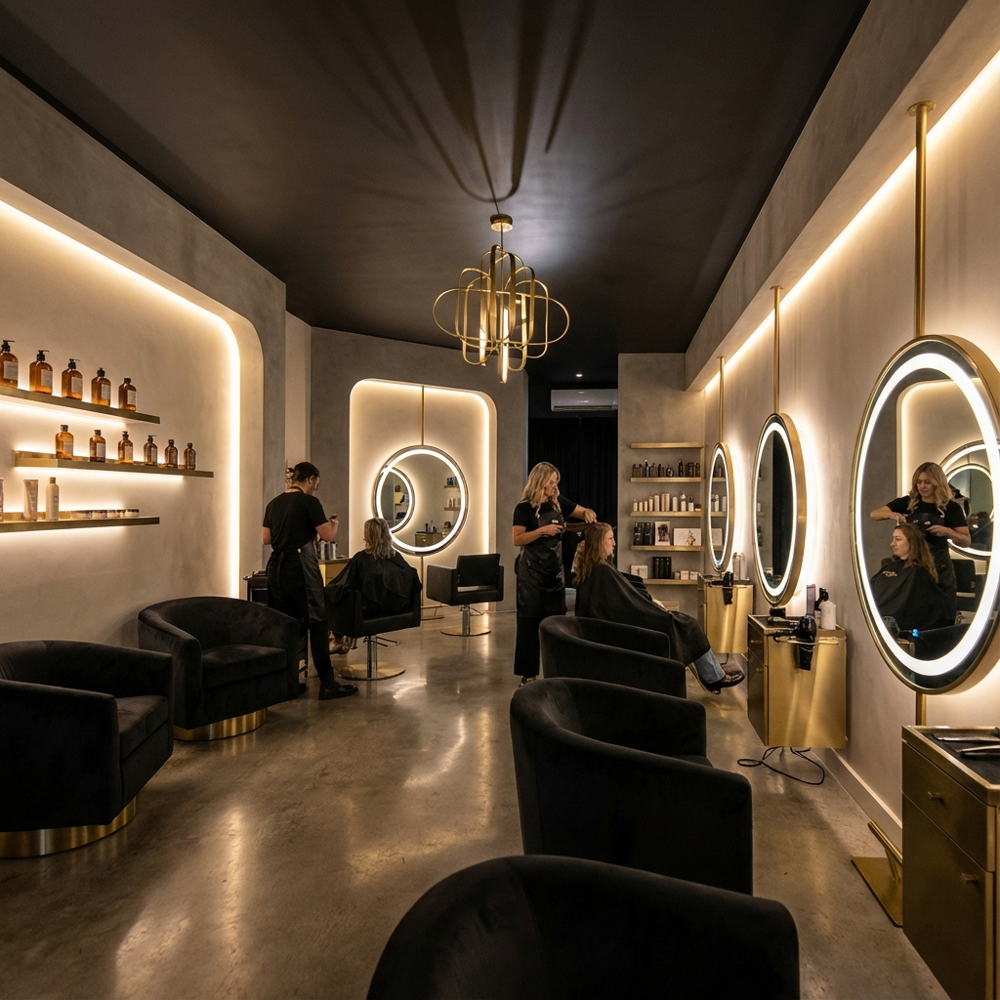
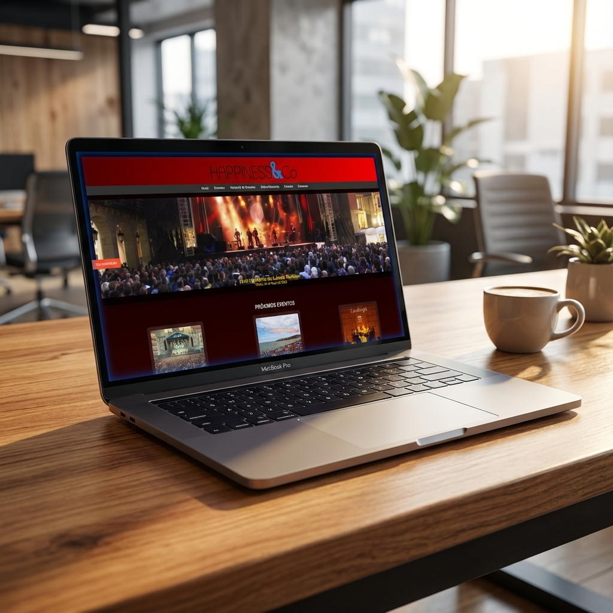

Construyo productos digitales de principio a fin — de la interfaz a la infraestructura que los sostiene.
Trabajo en el punto donde el diseño se encuentra con la ingeniería — construyendo productos completos, desde la interfaz hasta la infraestructura que los sostiene.
Luis Jardón Piquero, desarrollador de aplicaciones multiplataforma. Me interesa todo lo que ocurre entre la interfaz y la base de datos: la parte que se ve y la que sostiene lo que se ve.
Aprendo rápido, cuido el detalle y busco unirme a un equipo donde poder crecer construyendo cosas que importen.
Plataforma de reservas para barbería con panel de administración, app Android nativa y despliegue propio en producción.
Ver proyecto →
Servidor casero sobre Debian para practicar redes, automatización y control de usuarios en un entorno self-hosted.
Leer más →App Android para llevar el registro de películas y series vistas y pendientes, con API REST propia en Flask y SQLite corriendo en mi servidor. Un proyecto personal en uso activo.
Código →Plataforma de eventos locales: conciertos, festivales y actividades culturales en Gijón.
Ver proyecto →
Me interesa especialmente diseñar flujos que eliminan trabajo manual: automatizaciones e integraciones con IA que conectan herramientas y toman pequeñas decisiones por su cuenta. Este es, resumido como un flujo, el proceso de evaluarme para un puesto: